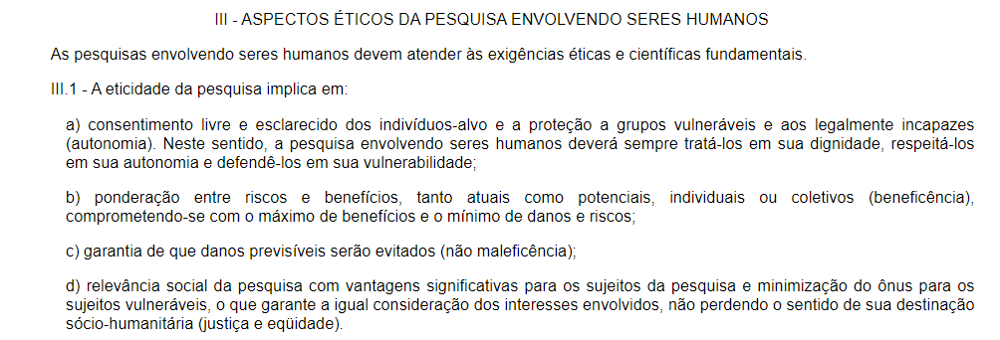

Questões Éticas
Questões Éticas
Introdução
Durante a avaliação, considerando a presença de usuários, as questões éticas serão de alta relevância à entrevista, com o objetivo de seguir ao máximo os Critérios da Ética em Pesquisa com Seres Humanos conforme Resolução no. 196/96 do Conselho Nacional de Saúde. É de suma importância que a parte entrevistada entenda e concorde com os princípios éticos abordados durante essa entrevista, após ler o Termo de Consentimento presente em Termos, na aba Análise de Tarefas.
Quanto à Pesquisa:
A entrevista feita pelo Grupo 6 é obrigada a seguir os pontos de eticidade da pesquisa apresentados no tópico III (três) da Resolução no. 196/96 do Conselho Nacional de Saúde, sendo estes apresentados pela figura 1, a seguir:

Figura 1: Critérios para a eticidade de uma pesquisa. Fonte: Resolução no. 196/96 do Conselho Nacional de Saúde.
Dentre as 26 exigências destacadas no tópico III.3, acerca de tópicos que a pesquisa envolvendo seres humanos tem de tratar corretamente, se destacam:
- d) prevalecer sempre as probabilidades dos benefícios esperados sobre os riscos previsíveis;
- g) contar com o consentimento livre e esclarecido do sujeito da pesquisa e/ou seu representante legal;
- h) contar com os recursos humanos e materiais necessários que garantam o bem-estar do sujeito da pesquisa, devendo ainda haver adequação entre a competência do pesquisador e o projeto proposto;
- l) respeitar sempre os valores culturais, sociais, morais, religiosos e éticos, bem como os hábitos e costumes quando as pesquisas envolverem comunidades;
- p) assegurar aos sujeitos da pesquisa os benefícios resultantes do projeto, seja em termos de retorno social, acesso aos procedimentos, produtos ou agentes da pesquisa.
Quanto aos Participantes:
Antes da entrevista, os participantes podem/devem:
- não concordar com o termo de consentimento apresentado;
- ficar ciente sobre a gravação e anotação de dados que ocorrerá durante a entrevista;
- ficar ciente sobre o anonimato na apresentação dos dados adquiridos;
- ser propriamente apresentado/a ao ambiente, se acostumar e criar conforto;
- conversar casualmente entre si ou com os entrevistadores, criando um ambiente mais amigável.
Durante a entrevista, os participantes podem/devem:
- desistir a qualquer momento da entrevista, seja qual for o motivo ;
- responder às perguntas de forma coesa;
- levar o tempo necessário para se expressar.
Referências
[1] Critérios de Ética, Resolução no. 196/96 do Conselho Nacional de Saúde. Disponível em: https://bvsms.saude.gov.br/bvs/saudelegis/cns/1996/res0196_10_10_1996.html. Acesso em 14 de dezembro de 2022.
[2] BARBOSA, Simone et al. Processos de Design de IHC. In: BARBOSA, Simone. Interação Humano-Computador e Experiência do Usuário. Autopublicação, 2021.
Histórico de Versão
| Data | Versão | Descrição | Autor | Revisor |
|---|---|---|---|---|
| 14/12/2022 | 1.0 | Implementação do arquivo | Rodrigo de Andrade | Yago Passos |
| 18/12/2022 | 1.1 | Padronizando referência e histórico de versão | Gabriel Marcolino | Rodrigo de Andrade |